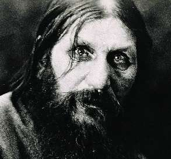

ЧЕЛОВЕК-ЗАГАДКА
Годовщина убийства Григория Распутина. Я долго занимался историей этого человека, пытаясь понять, что же он собою представлял, но так и остался в сомнениях.
Роль Распутина в истории России огромна. Вернее, роль «распутинщины» — катастрофического репутационного удара по монархии, сыгравшего чуть ли не главную роль в крахе государства, а стало быть и во всех последующих макротрагедиях. Но, как ни диковинно это прозвучит, сам Григорий Распутин в «распутинщине» не виноват. Он не был ни властолюбцем, ни интриганом, ни стяжателем. Он был — странный. Я так и назвал повесть про него — «Странный человек».
«Старец» явно чувствовал и слышал что-то особенное, в нем несомненно жила какая-то магическая сила. Ее ощущали почти все, кто с ним общался. И останавливать внутреннее кровотечение у наследника — то, чего не умели врачи — Распутин тоже каким-то образом мог, это факт.
Он был звероват, необразован, не шибко умен, им кто угодно манипулировал, и всё же жил в нем некий таинственный, не имеющий названия дар.
Но 30 декабря 1916 года неистовый патриот Пуришкевич и нарцисс Феликс Юсупов, желая спасти монархию, отравили Распутина ядом, всадили в него несколько пуль, проломили голову гирей и потом еще кинули в прорубь. Только так, четверным убийством, и смогли извести. Очень уж велика была жившая в Распутине сила.
Россию убийцы не спасли. Она, как и предсказывал Григорий царю с царицей, без него сразу сгинула. Только убили тайну, которая так навсегда и осталась неразгаданной.